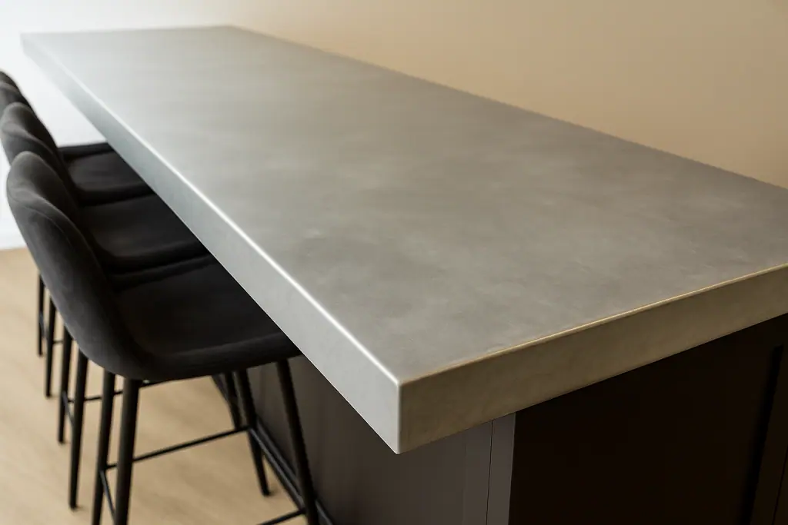
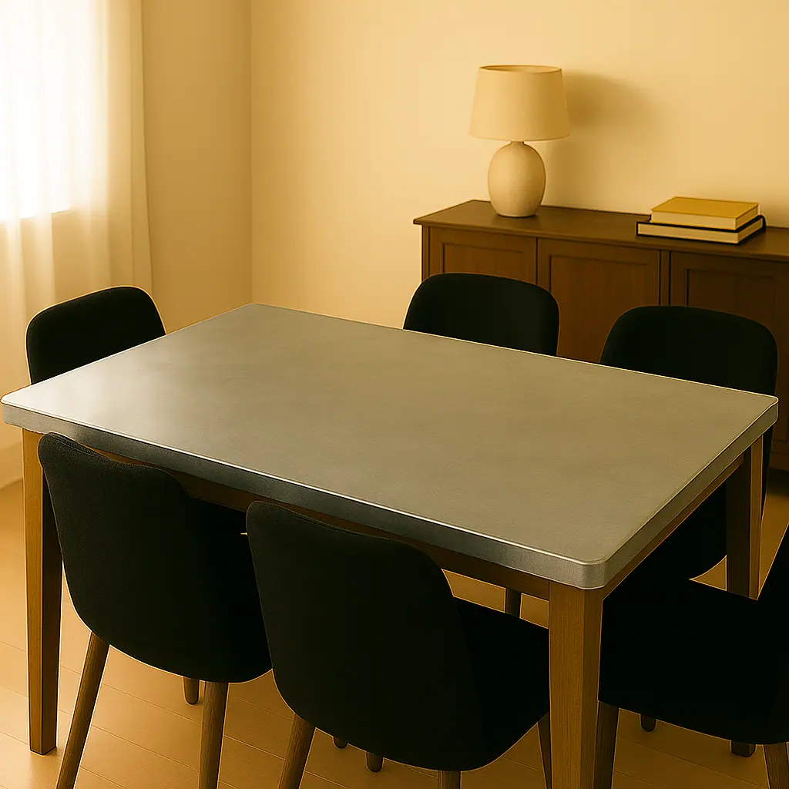

Discover the understated elegance and lasting durability of a zinc table top from Halman Thompson. Each piece is handcrafted by our artisan metalworkers, offering a unique focal point that effortlessly blends contemporary style with timeless appeal.
Whether you’re envisioning a sophisticated zinc top table for your family kitchen, a striking centrepiece for your dining room, or hard-wearing yet stylish zinc table tops for a bustling restaurant, bar, or café, our zinc sheets offer unparalleled versatility. Its natural resilience makes it ideal for the demands of both busy homes and commercial environments.
With stunning finishes available, including lightly aged and antique zinc , your zinc table top can be tailored to perfectly complement any interior, from industrial chic to minimalist elegance.
Simply contact our team for a quote and we’ll handle the rest!

Cut to size
At Halman Thompson, we specialise in creating bespoke zinc table tops tailored to your precise specifications. Simply provide us with your required dimensions, and whether you need a classic rectangular dining zinc table, a round café zinc top table, or a custom shape for a kitchen island or commercial bar, our skilled team will cut, shape, and finish your zinc table top to ensure a perfect fit and seamless integration into your space.
Please get in touch with our team to discuss your requirements and we’ll be happy to provide a fast, free quotation .

Ready to fitReady to go
Every zinc table top from Halman Thompson is custom-made and delivered to you perfectly finished and ready for installation. We take care of all preparation and finishing, so your bespoke zinc table meets our renowned high-quality standards.
Pricing includes delivery and our turnaround time is typically 5-8 weeks. We work closely with you throughout the process, from design to dispatch, ensuring a straightforward experience and a zinc table top that’s ready to use immediately.
Get in touch for a bespoke quote . If you’re a business please use our Bespoke Quote for Businesses form .
- Cut to your size
- Any of our finishes
- 5–8 weeks, made to order
Handmade Zinc Table Tops
The true beauty of a Halman Thompson zinc table top is its handmade quality. Our experienced artisans craft each one individually here in the UK, combining traditional metalworking skills with modern precision. This ensures every zinc top table is exceptionally well-made, built to last, and perfectly tailored to you.
We pay close attention to every detail, from choosing the best zinc sheets to carefully shaping, finishing, and applying any ageing effects, such as our popular lightly aged and antique zinc finishes. This hands-on method lets us create truly unique zinc top tables to your exact requirements that highlight the metal’s natural charm.
Our commitment is to bring your vision to life, so if you have a specific design in mind, share your illustration or example with us. This personalised approach guarantees that your zinc table is not only functional but also a true reflection of your style.
Choose a lacquered finish for a consistently sleek, modern look that’s protected from further ageing, or opt for an unlacquered surface to embrace the unique patina and character that develops over time.
Contact our team to discuss your needs or complete our bespoke order form for a fast and free quotation!
WHY CHOOSE A ZINC TOP TABLE?
A zinc table top from Halman Thompson is an excellent choice, offering a compelling blend of distinctive style, lasting durability, and everyday practicality. Zinc provides a sophisticated, contemporary aesthetic that can also develop a beautiful, unique patina over time if left unlacquered, adding character to your space. Our various finishes ensure you can achieve the perfect look that suits your taste.
More than just good looks, a zinc top table is incredibly durable. It naturally resists corrosion and wear, making it tough enough for daily use in busy homes or commercial spaces like restaurants and bars. Each zinc table top is handmade and cut to your exact size and shape for a truly custom piece. Zinc is also low maintenance, easy to clean, and suits various interior styles, from industrial to minimalist. As a sustainable material with a lower environmental impact, it’s a responsible choice too.
LOOKING AFTER YOUR ZINC TABLE TOP
A zinc table top is remarkably durable and requires minimal maintenance to keep it looking its best for years to come. How you care for your zinc table will slightly differ based on the finish you choose.
For lacquered zinc table tops, the protective coating seals the surface, maintaining its original appearance and guarding against spills and further ageing. Simply wipe clean with a soft, damp cloth and mild detergent if necessary. Avoid abrasive cleaners or scouring pads, as these can damage the lacquer.
If you’ve chosen an unlacquered zinc table top to allow its natural patina to develop over time, the surface will evolve over time, gaining unique markings and a richer depth of colour. This is a natural characteristic of zinc and adds to its charm. For cleaning, use a soft cloth and gentle soap. Acidic substances like lemon juice or vinegar can mark unlacquered zinc, so be sure to wipe up spills promptly.
For all zinc table tops, we recommend using coasters, placemats, and trivets to protect the surface from potential scratches, heat, or prolonged contact with harsh substances. With simple care, your Halman Thompson zinc table top will remain a stunning and practical feature in your home or commercial setting.
To order your bespoke zinc table top, contact our team for a fast, free quote .


If you can dream it, we’ll make it.
Bars, balustrades, staircases, worktops, cladding and pieces that don’t have a name yet. Our designers and craftspeople work in brass, copper, zinc and steel, and alongside wood.